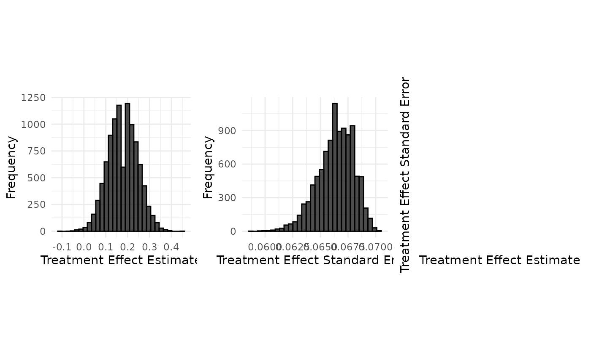

Data Generation : Aprepitant case study (binary endpoint, summary measure as rate difference)
2026-10-03
Source:vignettes/data_generation/Data_generation_aprepitant.Rmd
Data_generation_aprepitant.RmdSource :
set.seed(42)
case_study_config <- yaml::yaml.load_file(system.file("conf/case_studies/aprepitant.yml", package = "BExTE"))
format_case_study_config(case_study_config)| Parameter | Value |
|---|---|
| General | |
| Name | Aprepitant |
| Control | Ondansetron |
| Summary Measure Likelihood | binomial |
| Theta 0 | 0 |
| Endpoint | binary |
| Null Space | left |
| Sampling Approximation | FALSE |
| Target | |
| Target Control | 52 |
| Target Treatment | 57 |
| Target Total | 109 |
| Target Responses (Control) | 42 |
| Target Responses (Treatment) | 48 |
| Target Treatment Effect | 0.034412955465587 |
| Target Standard Error | 0.072936 |
| Source | |
| Source Control | 280 |
| Source Treatment | 293 |
| Source Total | 573 |
| Source Responses (Control) | 154 |
| Source Responses (Treatment) | 184 |
| Source Treatment Effect | 0.0779863481228669 |
| Source Standard Error | 0.04100323 |
Generation of aggregate data
source_data <- SourceData$new(case_study_config)
drift <- 0.1
target_sample_size_per_arm <- 100
target_data <- TargetDataFactory$new()
target_data <- target_data$create(source_data = source_data, case_study_config = case_study_config, target_sample_size_per_arm = target_sample_size_per_arm, treatment_drift = drift, summary_measure_likelihood = source_data$summary_measure_likelihood)
n_replicates <- 10000
data <- target_data$generate(n_replicates = n_replicates)
print(data[1:10,])## sample_control_rate sample_treatment_rate sample_size_per_arm
## 1 0.47 0.67 100
## 2 0.48 0.66 100
## 3 0.48 0.75 100
## 4 0.51 0.69 100
## 5 0.48 0.71 100
## 6 0.63 0.73 100
## 7 0.56 0.70 100
## 8 0.59 0.78 100
## 9 0.50 0.71 100
## 10 0.57 0.70 100
## treatment_effect_estimate treatment_effect_standard_error standard_deviation
## 1 0.20 0.06857113 0.6857113
## 2 0.18 0.06884766 0.6884766
## 3 0.27 0.06611354 0.6611354
## 4 0.18 0.06810286 0.6810286
## 5 0.23 0.06749074 0.6749074
## 6 0.10 0.06558963 0.6558963
## 7 0.14 0.06755738 0.6755738
## 8 0.19 0.06430397 0.6430397
## 9 0.21 0.06752037 0.6752037
## 10 0.13 0.06746110 0.6746110
target_data$plot_sample(data)
Implementation details
read_function_code(sample_aggregate_binary_data)## sample_aggregate_binary_data <- function (rate, n, n_replicates)
## {
## n_successes <- rbinom(n_replicates, n, rate)
## return(n_successes/n)
## }
sample_treatment_rate <- sample_aggregate_binary_data(self$treatment_rate,
self$sample_size_per_arm,
n_replicates)
sample_control_rate <- sample_aggregate_binary_data(self$control_rate,
self$sample_size_per_arm,
n_replicates)
treatment_effect_standard_error <- sqrt(
sample_treatment_rate * (1 - sample_treatment_rate) / self$sample_size_control + sample_control_rate * (1 - sample_control_rate) / self$sample_size_treatment
)
standard_deviation <- sqrt(
sample_treatment_rate * (1 - sample_treatment_rate) + sample_control_rate * (1 - sample_control_rate)
)